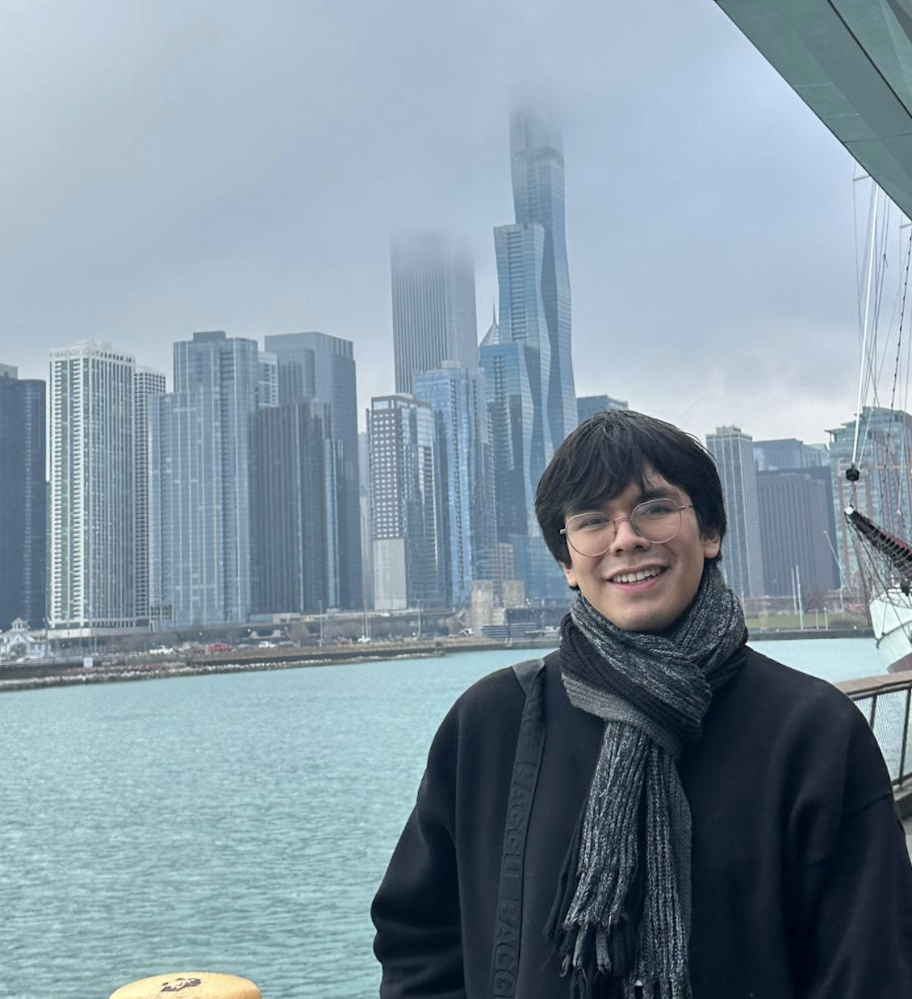

About
My name is Matías, and I am an international student from Chile studying Computer Science and Statistics at Duke University. I specialize in AI, machine learning, and data science, with experience developing high-precision models and managing complex data flows. My primary focus is on Large Scale Language Models (LLM), including recent work designing evaluation workflows and optimizing models such as Llama 3.1 and 3.2 to enhance multitasking performance. As a research assistant at the Water Research Foundation (WRF), I synthesized technical data into practical project tools and upheld rigorous data integrity standards. My advanced training in statistics, including multivariate analysis and estimator properties, enables me to address data challenges with mathematical rigor and a systemic approach.
In addition to my research, I am committed to mentoring and promoting quantitative reasoning. As an advisor at North Carolina Math Camp, I guide students through advanced problem-solving, reflecting the collaborative and analytical nature of data science. My leadership roles at Duke, including participation in the Kunshan Student Ambassador Council (KSAC), demonstrate my ability to manage complex international initiatives and support organizational growth. These experiences have strengthened my skills in leading diverse, cross-functional teams toward shared long-term objectives.
I am passionate about advancing my scientific expertise and applying modern AI architectures, such as agent-based workflows and inference layers, to address challenges in the biopharmaceutical industry. My international experience provides a global perspective and a proactive, 'build from scratch' approach when collaborating with cross-departmental teams. I am eager to leverage my technical skills to enhance digital infrastructure, automation, and IT systems in drug discovery and development. I believe that integrating advanced AI into the drug development lifecycle can bridge the gap between target identification and clinical application, driving the next generation of biopharmaceutical innovation.
Program interests
- Data-science directions: Real-World Evidence Data Analytics, Biostatics, Computational Chemistry, Text Mining and Natural Language Processing (NLP), Clinical Trial Design and Analysis
- Drug-development stage: 🏭 7. Digital Infrastructure, Automation & IT Systems
- Programming level: Advanced
- Tools and platforms: LangChain (https://www.langchain.com/), Cursor/VScode (https://github.com/ds4cabs/PharmaBioinfomatics/issues/78), Github Personal Website Development (https://github.com/), Develop program book using Adobe Expression, Design flyer using Canva (https://www.canva.com/)